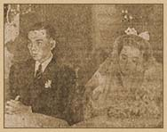

|
j
a v a s c r i p t |
July 24, 1943
Palermo has been taken. Significantly, Marshall Badoglio is said to be in London. Apart from the early return of Guinto and Duran, we've heard nothing from the rest of the Japan Inspection Committee for more than a week now. The Japanese tried to calm worried family members here with an article saying that all are "in excellent health and good spirits." José Desiderio, chief of the Constabulary Secret Service asked permission to meet his son when he arrived as a pensionado. Permission granted, they had an "unexpected but happy reunion" a few hours later. More articles on surrendering guerrillas: "Approximately 4,000 followers of the BUDC (Barrio United Defense Corps) from different parts of Concepcion formally surrendered to the authorities last Sunday afternoon. At La Paz, another 775 BUDC members surrendered." Rev. Lopez, Catholic chaplain of the USAFFE was one named. Surrendering guerrillas have to undertake an eight-week rejuvenation course. I spoke with an Internal Revenue Officer who is six weeks into the course. He lost eleven pounds and complained about not getting enough food: "We're supposed to be rejuvenated morally, physically and mentally, all on hungry stomachs. We have to memorize and learn to sing Japanese songs ... hear a lot of speeches.... I'm too hungry to bother much about the stuff."

Safe!
The Tribune has a picture of the wedding of Vargas' daughter, Lourdes, and Eduardo Ledesma. Manilans say the sudden wedding is because a certain Japanese officer was anxious to marry her. |
|
|
|
|